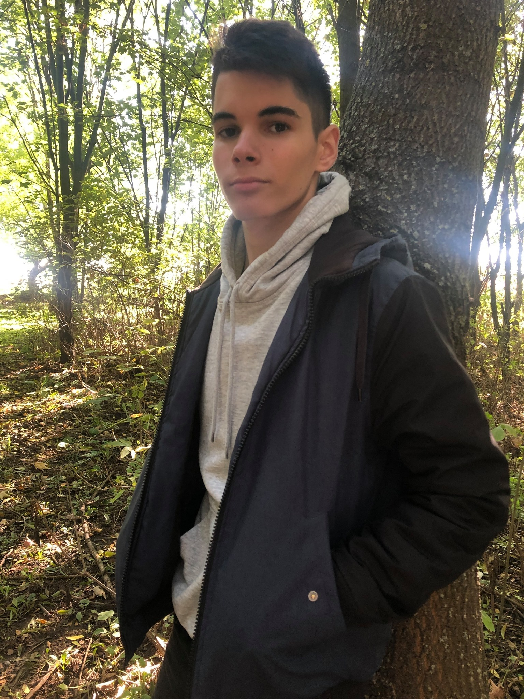

Röviden Rólam

Varga Ruben vagyok szabidőben szeretek biciklizni játszani és a barátaimmal lenni valmint könyvet olvasni de azt sajnos mostanság nem nagyon csinálta.Jelnleg Tordason élek a szüleimmal és a testvéreimmel.Amit még fontos tudni rólam hogy 6 évig zenéltem égész pontosan klarinétoztam amit nagyon szerettem és majd a későbbiekbe szeretnék folytatni.Sportoni nem nagyon sportoltam de szerettem focizni és sokat is fociztam gyerekként.